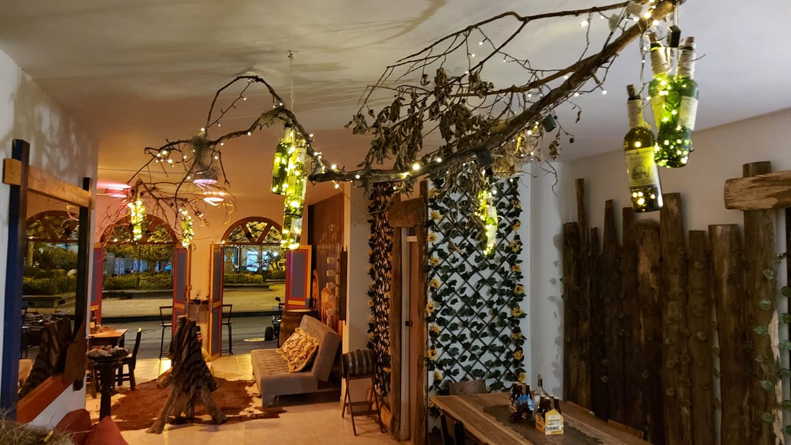
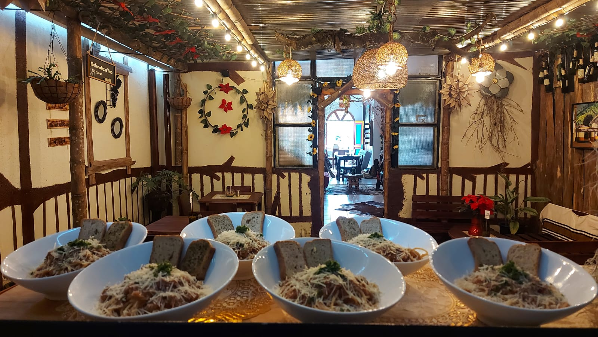
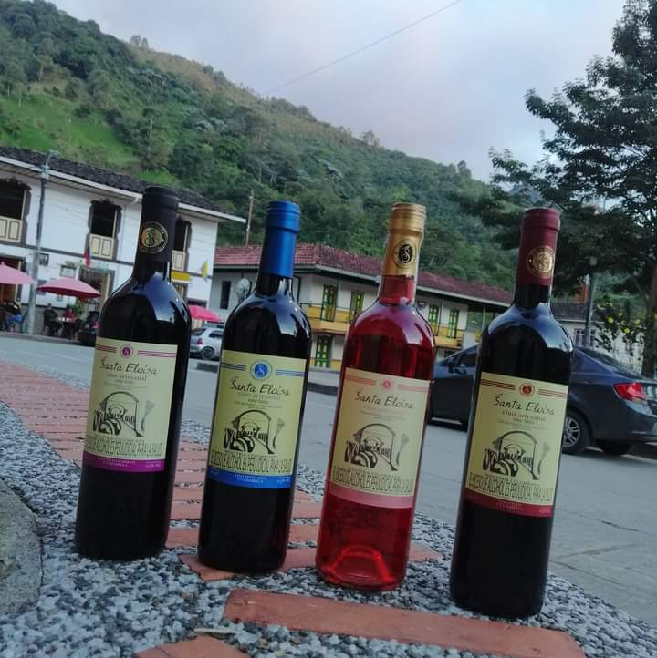
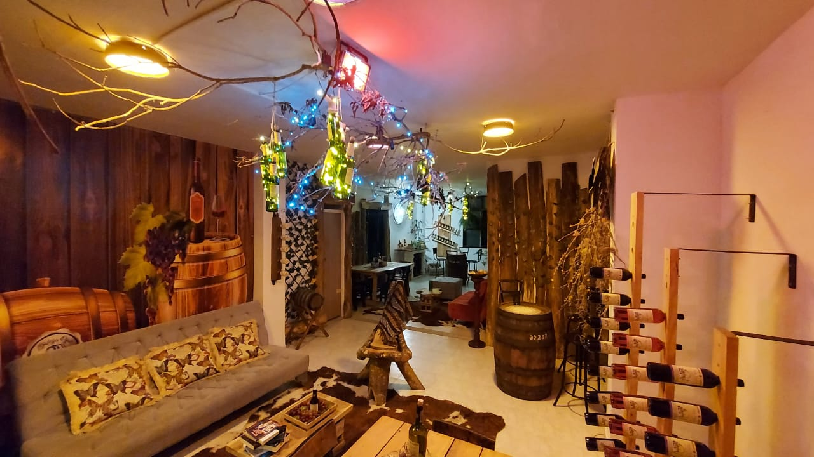
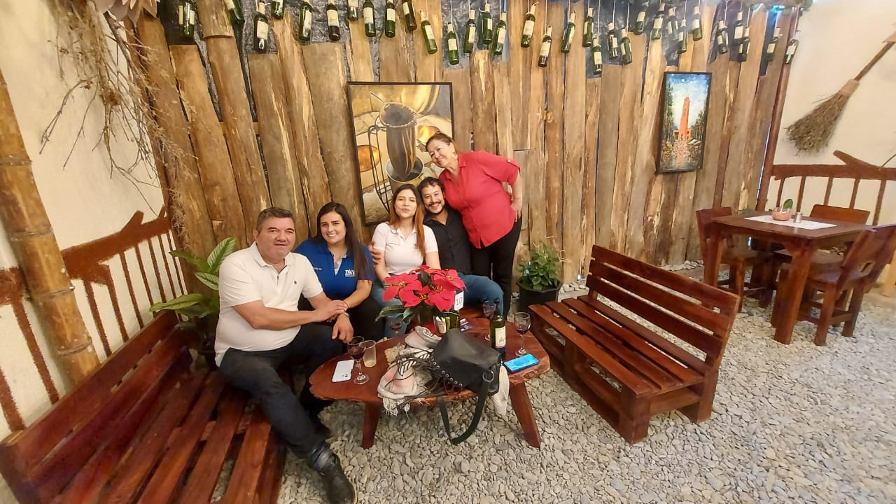
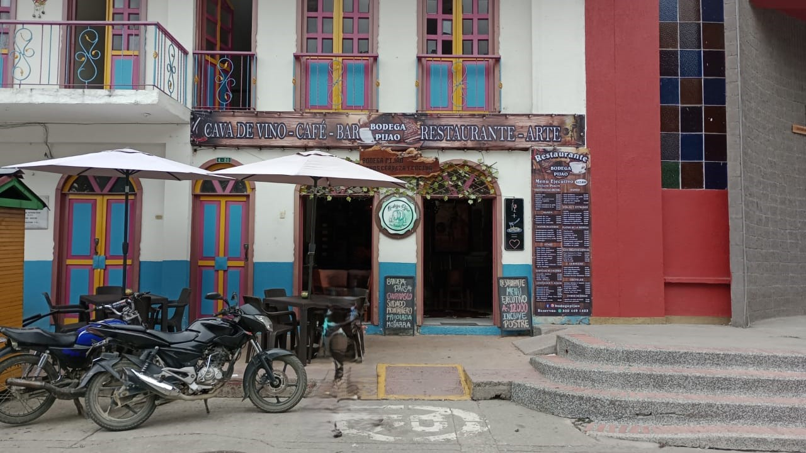

Sobre nosotros
Bienvenidos a nuestro restaurante gastrobar y cava de vinos, un lugar donde la gastronomía, el arte y la tradición se encuentran para ofrecerte una experiencia única. Ubicados en el encantador municipio de Pijao, Quindío, Colombia, nos enorgullecemos de ser la mejor oferta gastronómica y de entretenimiento de la región.

Nuestra Oferta
En nuestro espacio, podrás disfrutar de:
- Una amplia selección de vinos: Desde los clásicos hasta los más exquisitos, nuestra cava ofrece opciones para todos los paladares.
- Café de origen: Con una rica tradición cafetera, ofrecemos los mejores granos del Quindío, preparados con dedicación y pasión.
- Gastronomía de alta calidad: Platos que combinan la tradición quindiana con toques modernos, destacando por su sabor y presentación.
- Arte y cultura: Nuestra galería presenta obras de artistas locales, creando un ambiente que inspira y deleita.


Nuestra Historia
Hace cinco años, iniciamos este sueño como una modesta cava de vinos. Con el tiempo y el apoyo de nuestros clientes, evolucionamos hasta convertirnos en lo que somos hoy: un restaurante gastrobar con una exquisita selección de vinos, café de origen y una galería de arte. Este crecimiento refleja nuestro compromiso constante con la calidad y la innovación.

Lo que nos hace únicos
Nuestros clientes destacan nuestra calidad, sabor y servicio. Cada visita a nuestro restaurante es una celebración de la tradición cafetera y gastronómica del Quindío, acompañada de un servicio atento y personalizado.

Ven y descúbrenos
Te invitamos a visitarnos y vivir una experiencia que combina lo mejor del Quindío: su café, su gastronomía y su arte. En nuestro restaurante gastrobar y cava de vinos, cada detalle está pensado para que disfrutes al máximo.
